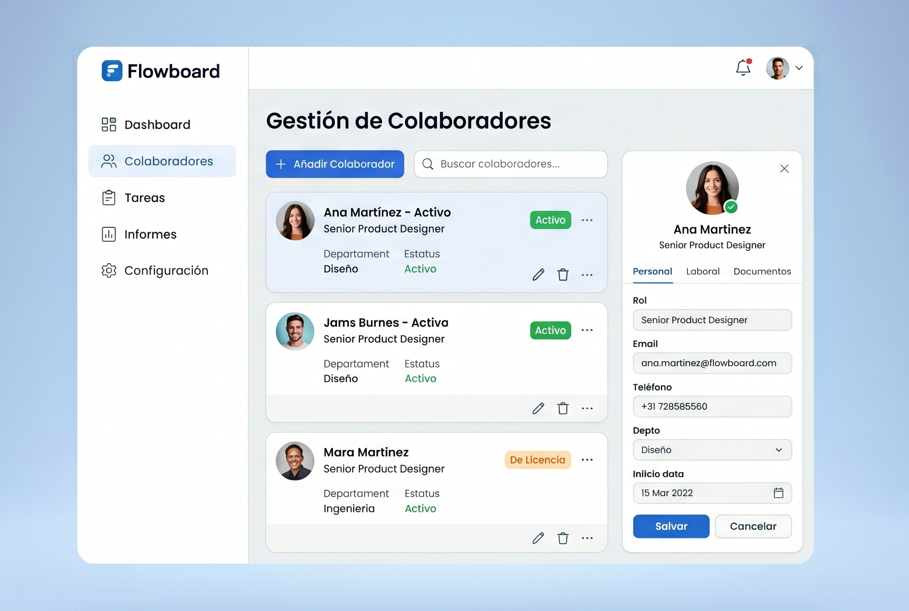

Descubre nuestras funcionalidades
Administra colaboradores, gestiona solicitudes, controla asistencia y accede a información clave en una plataforma centralizada, pensada para mejorar la eficiencia de tu organización.

Todo lo que necesitas para gestionar tu equipo de forma eficiente, organizado en una sola plataforma.
El equipo que impulsa la innovación en RRHH
Trabajamos en el desarrollo de soluciones digitales que simplifican procesos y mejoran la gestión interna de las organizaciones.


Resuelve tus dudas sobre el sistema de forma rápida y sencilla
Accede a una sección de preguntas frecuentes donde encontrarás respuestas claras sobre el uso del sistema, la gestión de colaboradores y los procesos de RRHH.
¿Qué es un software de gestión empresarial?
Es una solución tecnológica diseñada para digitalizar y centralizar todas las interacciones, tareas y flujos de trabajo entre los colaboradores de una empresa. Su objetivo principal es transformar procesos manuales en flujos digitales eficientes, permitiendo que cada área de la organización esté conectada en un mismo entorno.
¿Qué hace el software de Flowboard?
Flowboard es un ecosistema integral altamente personalizable que se adapta a las necesidades específicas de cada organización. Ofrece un conjunto robusto de funcionalidades diseñadas especialmente para que las pequeñas y medianas empresas puedan gestionar su talento y operaciones con herramientas de nivel corporativo.
¿Para qué sirve un software de gestión empresarial?
Su propósito es impulsar la productividad mediante la automatización de tareas repetitivas y la centralización de la información en tiempo real. Esto facilita una toma de decisiones estratégica basada en datos precisos, agiliza los procesos internos y permite que el equipo se enfoque en lo que realmente importa: el crecimiento del negocio.
¿Qué tareas puedo automatizar con Flowboard?
Con Flowboard, puedes transformar la operatividad diaria mediante la automatización del envío de solicitudes y la interacción constante entre colaboradores, estableciendo un canal de comunicación directo y eficiente con el departamento de RRHH. La plataforma integra la recuperación automática de datos de asistencia para optimizar la gestión del personal, facilita el procesamiento instantáneo para aceptar o declinar solicitudes recurrentes y asegura un control financiero y administrativo riguroso mediante el envío de notificaciones automáticas cuando se detectan pagos pendientes o incumplimientos en fechas específicas.